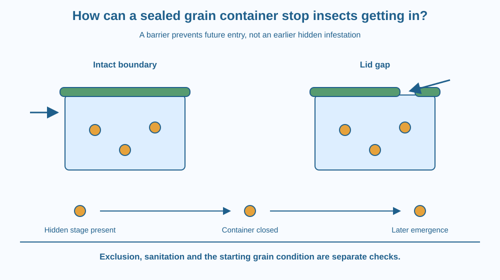

Explain how a sound container can interrupt the entry of storage insects. Distinguish exclusion from killing insects already present. Use hidden life stages and inspection to explain why a sealed lid alone does not establish that stored grain is uninfested or suitable to eat.
A household closes a grain container carefully, yet insects appear later. It seems as though the insects came from nowhere. Another possibility is that some life stages were already present in the grain or container before the lid was closed.
A lid can block new entry without removing an existing infestation. To understand the result, separate the condition at the start from the protection provided afterwards. The container is one part of a storage system, not a time machine that resets everything inside it.
Stored-grain insects can enter through openings, damaged packaging or contaminated material brought into storage. Physical exclusion means preventing access by maintaining an effective barrier. A sound wall, well-fitting lid and intact seal reduce the routes available for new entry.
The size and continuity of openings matter. A narrow gap around a lid can undermine an otherwise strong container. The useful question is not whether a lid is present, but whether the whole boundary blocks the relevant pest's route.
Insect development includes different life stages. For many storage pests these include egg, larva, pupa and adult, although the exact life cycle depends on the species. Some stages can be difficult to see, and some pests develop within grains.
Consequently, no visible adult insects does not prove that no infestation exists. Grain or a reused container can carry small or concealed stages before storage begins. Sealing that material may prevent more entry while leaving the original occupants inside.
Sanitation reduces sources of infestation. Residues from an earlier batch can shelter pests. Appropriate cleaning and inspection of an empty storage space therefore address a different part of the system from the new lid's barrier function.
Mixing a new batch with old residues can also connect the batches biologically. Keeping identities and storage records helps an adult investigate a problem. The lesson does not prescribe insecticides, fumigants or a home treatment for contaminated food.
Specialised hermetic storage uses a sufficiently gas-tight system and its internal conditions as part of pest management. That is more than putting an ordinary lid on a household tub. Its performance depends on material, seals, grain condition and correct operation.
This lesson focuses on entry barriers and starting infestation. Moisture management, microbial spoilage and nutrition are separate storage questions. A container can exclude insects yet still contain unsuitable damp grain. A successful barrier does not certify every aspect of food quality or safety.
Draw a container boundary with three possible routes: a wall hole, a lid gap and material placed inside before closure. Cross out the first two when the barrier is repaired, but keep the third pathway visible in the timeline.
Then draw a small hidden-stage symbol among the grains at the start and an adult later. This model explains later appearance without suggesting that grain spontaneously creates insects.
Use two labels: prevent new entry and manage the starting condition. They belong to different actions and evidence. A good storage explanation needs both because closing the boundary changes future access, not the past history of the contents.
The SVG compares an intact lid seal with a damaged edge. An insect-entry arrow stops at the intact boundary and passes through the gap in the damaged one.
A separate timeline shows a concealed stage present before closure and a later visible insect. The diagram therefore distinguishes entry after storage from emergence of something already inside.
The drawings are not identification guides for a particular pest species. Their purpose is the barrier-and-timeline model. No image implies that every grain containing an unseen stage can be recognised from a simple external mark.

Rice, wheat and pulses stored in Indian households can be affected by insects under suitable conditions. Container quality, starting material, cleanliness and handling all influence the result. A familiar traditional container is not automatically perfect or ineffective simply because of its age or material.
A school grain-store project should inspect empty equipment and use photographs or clean models. It should not open infested bags or move pests between locations. An adult should handle any real food-quality concern.
The same barrier logic applies beyond grain. A strong package with one damaged seam can fail at that seam. Inspecting the complete boundary matters more than admiring the thickest part of the wall.
Use paper and a clean empty unbreakable container with adult permission. No grain, insects or pesticides are needed.
Do not attempt to prove a seal insect-tight by introducing insects. The activity maps vulnerabilities conceptually. A visual inspection can identify obvious damage but cannot certify specialised hermetic performance or guarantee the safety of stored food.
If adult insects appear days after a lid was closed, what evidence would distinguish a hidden initial infestation from a new entry route? Consider the grain's history and the container's condition.
Now imagine a perfect entry barrier around damp grain. Which important storage question remains unanswered? Explain why success against one failure mode does not establish a complete storage solution.
What is physical exclusion in grain storage?
Answer: C — Exclusion blocks access routes rather than automatically destroying existing pests.
Why may insects appear after a container is closed?
Answer: B — Small or concealed stages can enter with the original grain or residues.
A container excludes insects but holds damp grain. What is the best conclusion?
Answer: A — Entry prevention does not address every condition affecting grain quality.
Design a storage-inspection card with sections for starting material, empty-container condition, closure and later observations. Include a diagram showing the full boundary.
Your card must avoid the claim that any closed lid kills all pests. Add a note to report suspicious grain to a responsible adult rather than tasting it or applying an improvised chemical treatment. The product should separate observations from conclusions about the cause of an infestation.
A closed container can successfully exclude new insects while visible insects still appear inside. Both observations can be true because the timeline matters. A barrier acts on future entry; hidden life stages can carry the earlier history of the contents into the later result.
An intact container can block new insect entry, but hidden stages already present and other storage conditions must be considered separately.